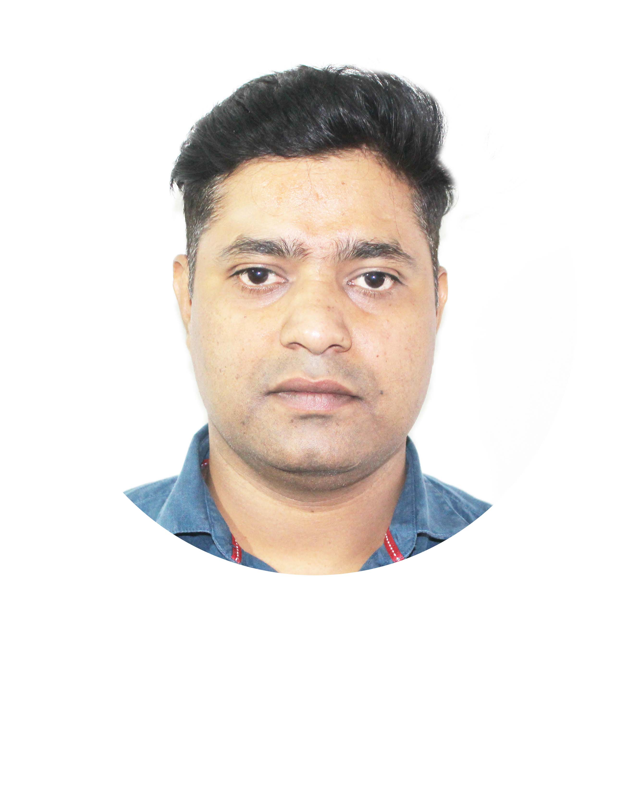

Resume

CHANDAN KUMAR GUPTA
CAREER OBJECTIVE
-
To acquire a position that gives me opportunities to create ideas in an
organization where I can get maximum exposure and to work with a progressive
company.
SUMMARY STATEMENT
-
I am a person with positive frame of mind and determination that will help me to achieve
my goal. The acquired knowledge and skill provide me an edge to be a competent person for
my job.
ACADEMIC QUALIFICATION
- Completed Master of Computer Application from Sikkim Manipal University.
- Completed Bacholor of Science in Information Technology from Ranchi university.
- Completed Intermidiate Science from Jahrkhad Board.
- Completed 10th standard under B.S.E.B.
COMPUTER SKILLS
- Well versed in MS Office.
- Knowledge of computer assembling, fault finding, installtion and networking.
- Knowledge of programming languages like C, C++, Java, Visual Basic & Oracle.
WORK EXPREIENCE
- Presently working with RED FM as Network Engineer.
- Worked with Educomp Solutions Ltd. as Sr. Engineer.
- Worked with Lakme Salon as a Salon Manager.
- Worked with Educomp Solutions Ltd. as a SmartClass Coordinator.
- Worked in RED FM as Traffic Scheduler.
OTHER ACHIVEMENT
- Got an award from Educomp Solutions Ltd. in April 2017 fro outstanding support Engineer.
OTHER KNOWLEDGE
- Adobe Photoshop ✦ ✦ ✦ ✧ ✧
- Abode PremierPro ✦ ✦ ✦ ✧ ✧
- Abode AfterAffect ✦ ✦ ✧ ✧ ✧
STRENGTHS
- Effective communication skill.
- Confident with positive attitude.
LANGUAGES KNOWN
- English ✦ ✦ ✦ ✧ ✧
- Hindi ✦ ✦ ✦ ✦ ✦
- Bangla ✦ ✦ ✦ ✧ ✧
- Nepali ✦ ✦ ✦ ✧ ✧
HOBBIES AND INTERESTS
- Reading
- Listening to music
Contact Details
Declaration
Proudly made by me with the help of Dr. Angela Yu